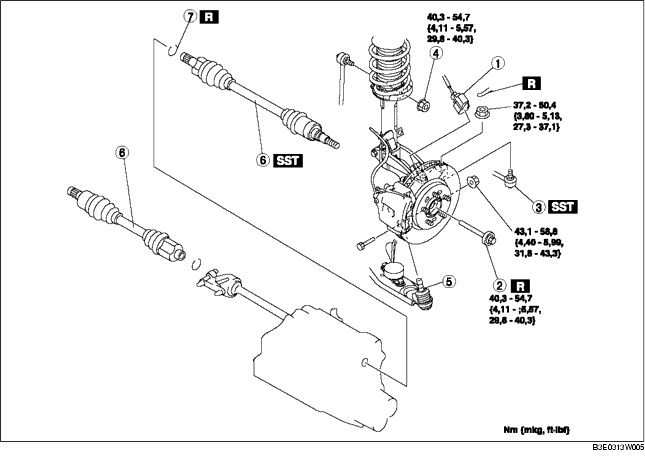

1. Das Getriebeöl ablassen. (Siehe GETRIEBEÖLWECHSEL [F35M-R].) (Siehe WECHSEL DES AUTOMATIKGETRIEBEÖLS.)
2. Gemäß der Reihenfolge in der Tabelle ausbauen.
3. Der Einbau erfolgt in umgekehrter Reihenfolge.

.
|
1
|
Steckverbinder des ABS-Raddrehzahlsensors
|
|
2
|
Sicherungsschraube
|
|
3
|
Kugelgelenk, Spurstangenkopf
|
|
4
|
Obere Mutter des Stabilisatorverbindungsgelenks
|
|
5
|
Kugelgelenk des unteren Vorderrad-Querlenkers
|
|
6
|
Antriebswelle
(Siehe Ausbauhinweis für Antriebswelle.)
(Siehe Einbauhinweis für Antriebswelle.)
|
|
7
|
Sicherungsring
(Siehe Einbauhinweis für Sicherungsring.)
|
1. Eine Ersatzschraube auf die Antriebswelle aufschrauben.
2. Mit einem Kupferhammer gegen die Schraube klopfen, um die Antriebswelle von der Achse zu lösen.
3. Die Antriebswelle von der Radnabe lösen.
4. Eine Stange zwischen Außenlaufring und Getriebe ansetzen und die Antriebswelle (L) aus dem Getriebe treiben.
5. Die Antriebswelle (R) von der Zwischenwelle lösen, dazu mit einer Messingstang und Hammer gegen den Außenlaufring am Getriebe schlagen.
6. Die SSTs nach dem Entfernen der Antriebswelle am Getriebe befestigen.
1. Den Vorgaben entsprechend einen neuen Antriebswellensicherungsring, mit der Öffnung nach oben, am Ende der Antriebswelle in die Ringnut einsetzen.
2. Nach Montieren des Sicherungsrings dessen Außendurchmesser messen.
1. Die Antriebswelle in die Radnabe schieben.
2. Getriebeöl auf die Dichtringlippe auftragen.
3. Die Antriebswelle in das Getriebe einrücken.
4. Nach dem Einbau den Außenlaufring am Getriebe nach außen ziehen, um den Sitz der Antriebswelle zu prüfen.
1. Einen neuen Sicherungsring in die Ringnut der Zwischenwelle einsetzen. (Siehe ZWISCHENWELLE ZERLEGEN/ZUSAMMENBAUEN.)
2. Die Antriebswelle in die Radnabe schieben.
3. Die Antriebswelle in die Zwischenwelle einsetzen.
4. Nach dem Einbau den Außenlaufring am Getriebe nach außen ziehen, um den Sitz der Antriebswelle zu prüfen.